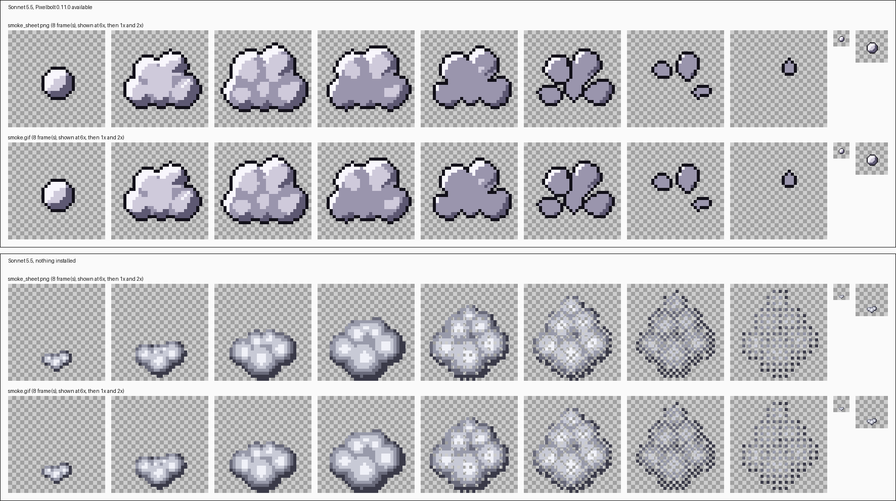
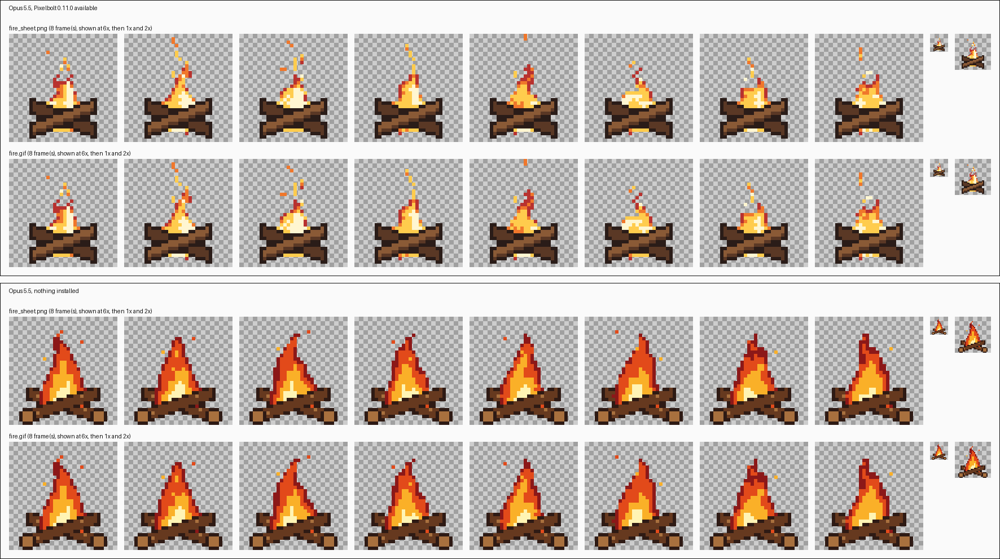

Does a pixel-art MCP server help Claude? Pixelbolt tested with and without
In a benchmark we planned in advance and ran on 3 November 2026, Pixelbolt 0.11.0 connected
as an MCP server made no measurable difference to the results of Claude Haiku, Sonnet and Opus 5.5 on 12 pixel-art
requests in Claude Code: every check passed in 32 of 36 tasks with it and 31 without, a blind Claude judge split the pairs 18 to
13 with 5 ties (one of the 18 by default; sign test p = 0.47), and the Pixelbolt runs cost 1.47 times as much. No
model and no total met our rule for saying Pixelbolt helps. On the five animation and effect tasks, which this release
was built to improve, the Pixelbolt arm won 9 of 15 pairs, exactly the 60% bar we set before the run, though a split
that size often happens by chance (p = 0.61); a repeat the same day won 7 of its 11 decided animation and effect pairs
but passed 30 tasks against 32, which would have failed that bar. Earlier versions showed no measurable help:
Pixelbolt main f964f40 (26 and 27 October, three runs) and 0.9.0 (23 October), whose animations and
effects lost most of their pairs.
We make Pixelbolt. We planned this test and wrote its rules down before the first run. Before run 3 we also decided that this page would go up only if run 3 passed the animation bar; the earlier runs alone stayed unpublished. Every number is here, including the losses: the method, scripts, every job's result and files, and every judge verdict are below.
The results on Pixelbolt 0.11.0 (run 3, 3 November)
Each setup is an "arm": Pixelbolt available, or nothing installed. "Valid" means every requested file exists at the requested name and passes all the deterministic checks in the method. "Pairs" are the blind judge's verdicts, one per task, counted for an arm only when it won with the two results shown in both orders.
| Model | Arm | Valid (of 12) | Pairs won vs nothing installed | Called Pixelbolt | Cost of 12 tasks | Median time |
|---|---|---|---|---|---|---|
| Haiku 5.5 | Pixelbolt 0.11.0 available | 11 | 9 vs 2, 1 tie (1 of the 9 by default) | 11 of 12 | $0.12 | 48 s |
| Nothing installed | 9 | – | – | $0.11 | 57.5 s | |
| Sonnet 5.5 | Pixelbolt 0.11.0 available | 11 | 3 vs 7, 2 ties | 9 of 12 | $1.19 | 30 s |
| Nothing installed | 11 | – | – | $0.81 | 34 s | |
| Opus 5.5 | Pixelbolt 0.11.0 available | 10 | 6 vs 4, 2 ties | 12 of 12 | $3.39 | 59.5 s |
| Nothing installed | 11 | – | – | $2.27 | 61.5 s |
The same-day repeat (same version, same settings)
| Model | Valid with Pixelbolt / with nothing (of 12) | Pairs won vs nothing installed | Called Pixelbolt | Cost with / without | Median time with / without |
|---|---|---|---|---|---|
| Haiku 5.5 | 9 / 10 | 7 vs 5 (2 of the 7 and 1 of the 5 by default) | 10 of 12 | $0.10 / $0.11 | 42.5 s / 54.5 s |
| Sonnet 5.5 | 10 / 11 | 4 vs 3, 5 ties | 11 of 12 | $1.36 / $0.78 | 35.5 s / 32.5 s |
| Opus 5.5 | 11 / 11 | 6 vs 4, 2 ties | 12 of 12 | $3.31 / $2.20 | 55.5 s / 54 s |
| All | 30 / 32 (of 36) | 17 vs 12, 7 ties (p = 0.46) | 33 of 36 | $4.76 / $3.10 (1.54×) |
"By default": the pair went to the only arm that delivered a readable file. In run 3, Haiku's no-tool
oak tree (T05) ended with no file after Claude Code refused its python3 command. In the repeat, Haiku's
no-tool sword (T04) and grass tile (T09) ended with no file after Claude Code refused their Python commands (the sword
is the cell re-run under change 7: its first run had delivered a sword drawn by another job's
leftover script, and every python3 command the re-run used to run its script was refused), and
Haiku's walk cycle with Pixelbolt (T08) stopped after two turns, saying its $0.60 budget was nearly spent when it had
used $0.002. Costs are Claude Code's own estimate at list price; in run 3 the Pixelbolt arm's 36 tasks cost $4.70
against $3.20. No job hit its turn, time or dollar cap, every job ran Claude Code 2.1.302, and every verdict
counted on this page came from a judge on 2.1.302 (see change 7).
Animations and effects: the bar we set for 0.11.0
Before run 3 we wrote down one more test, for this release: the Pixelbolt arm must win at least 60% of the decided pairs on the five moving tasks (coin spin, slime idle, walk cycle, campfire, smoke puff; 15 pairs over the three models; ties and by-default wins don't count) and pass at least as many tasks overall as nothing installed. Run 3 won 9 of 15, with no ties: exactly 60%, so one pair going the other way would have failed it, and a sign test on 9 against 6 gives p = 0.61. The plan decides the bar on run 3 alone. The repeat would have failed it: it won 7 of its 11 decided moving pairs (64%), but passed 30 tasks against 32. This bar is ours, for one release; it is not the rule for saying Pixelbolt helps Claude.
| Task | Run 3 (won-lost-tie, 3 pairs) | Run 3's repeat (3 pairs) | Main f964f40, three runs pooled (9 pairs) |
|---|---|---|---|
| T06 coin spin, 6 frames of 16×16 | 2-1-0 | 1-1-1 | 4-2-3 |
| T07 slime idle, 8 frames of 32×32 | 2-1-0 | 2-1-0 | 1-8-0 |
| T08 walk cycle, 6 frames of 32×32 | 1-2-0 | 1-1-1 (the loss by default) | 3-5-1 |
| T11 campfire loop, 8 frames of 32×32 | 1-2-0 | 1-2-0 | 0-7-2 |
| T12 smoke puff, 8 frames of 32×32 | 3-0-0 | 2-0-1 | 2-6-1 |
| All five | 9-6-0 | 7-5-3 | 10-28-7 |
Won-lost-tie for the Pixelbolt arm against nothing installed. Per-task counts are descriptive: one run per cell. The two tasks where a shipped preset fits the request, the slime and the smoke, went 5-1 in run 3 (repeat 4-1-1); the coin, walk cycle and campfire went 4-5 (repeat 3-4-2). Before run 3 we had checked that the smoke-puff preset, cut to 8 of its 19 frames, passes our checks.

smoke-puff preset, which has 19 frames, kept 8 evenly spaced ones with Pixelbolt's patch tool and rendered them. Bottom: nothing installed, Sonnet's own code. The judge picked the top one in both orders, for its clean outlines and shading; it called the bottom one's dithered fade noisy.
Every run side by side (never pooled across versions)
| Run | Pixelbolt | Valid with it (of 36) | Valid with nothing (of 36) | Pairs won with vs without (ties) | Sign test p | Static tasks, pairs* | Moving tasks, pairs* | Cost with / without |
|---|---|---|---|---|---|---|---|---|
| Run 1, 23 Oct | 0.9.0 | 28 | 32 | 10 vs 20 (6) | 0.10 | 9-9-3 | 1-11-3 | $6.94 / $3.50 (1.99×) |
| Run 2, 26 Oct | main f964f40 | 30 | 30 | 14 vs 13 (9) | 1.0 | 10-6-5 | 4-7-4 | $4.91 / $3.19 (1.54×) |
| Repeat 1, 26 Oct | main f964f40 | 33 | 30 | 15 vs 16 (5) | 1.0 | 11-6-4 | 4-10-1 | $5.58 / $3.31 (1.68×) |
| Repeat 2, 27 Oct | main f964f40 | 31 | 28 | 18 vs 14 (4) | 0.60 | 16-3-2 | 2-11-2 | $5.14 / $3.15 (1.63×) |
| Run 3, 3 Nov | 0.11.0 | 32 | 31 | 18 vs 13 (5) | 0.47 | 9-7-5 | 9-6-0 | $4.70 / $3.20 (1.47×) |
| Run 3's repeat, 3 Nov | 0.11.0 | 30 | 32 | 17 vs 12 (7) | 0.46 | 10-7-4 | 7-5-3 | $4.76 / $3.10 (1.54×) |
* Won-lost-tie for the Pixelbolt arm; static = T01 to T05, T09 and T10 (7 tasks × 3 models), moving =
T06 to T08, T11 and T12 (5 × 3). Splitting by kind was planned only for run 3's bar above; otherwise these columns are
descriptive. "Sign test p" is how likely a split at least this uneven would be by chance if neither arm were better
(ties dropped; under 0.05 was our bar). Cost ratios are from unrounded costs. Told (exploratory, runs 1 and 2 only):
run 1 27 valid and pairs 7 vs 21 (p = 0.013); run 2 32 valid and pairs 15 vs 17 (p = 0.86). By-default wins to the
Pixelbolt arm, each a Haiku no-tool job whose Python command was refused: run 2 one, repeat 1 one, repeat 2 three,
run 3 one, run 3's repeat two; run 3's repeat also had one the other way (the walk cycle above), and run 1 had one
each way (a no-tool python3 refused, and a Pixelbolt run that left its files in output/).
Without those cells: run 2 29 vs 30 valid of 35, pairs 13 vs 13; repeat 1 32 vs 30 of 35, pairs 14 vs 16; repeat 2
29 vs 28 of 33, pairs 15 vs 14; run 3 31 vs 31 of 35, pairs 17 vs 13; run 3's repeat 29 vs 31 of 33, pairs 15 vs 11.
In repeat 1, two no-tool cells delivered art from another job's leftover script (see Limits);
without them (from all 36, its by-default cell kept) it is 32 vs 29 of 34 and pairs 15 vs 15.
Pooled over run 2 and its two repeats (one commit; labelled pooled, with no claim of its own): valid 94 vs 88 of 108, pairs 47 vs 43 (18 ties), sign test p = 0.75. The plan fixed pooling only for those three, so run 3 and its repeat aren't pooled.
What changed in 0.11.0
- It was built for these tasks. After run 1, run 2 and its repeats we listed every animation and
effect pair Pixelbolt had lost or tied, with the judge's reasons, and aimed 0.11.0's changes at them: Pixelbolt's ready-made effect
presets became reachable through its MCP tools, and a new
slime-idlepreset was added at 32×32 and 8 frames, the size and length our slime request asks for. Its instructions, which the server sends to every client on connect, say to start effects from a preset and, for fewer frames, to keep evenly spaced ones with onepixel_patchcall; its quick start works that through for 8 ofsmoke-puff's 19 frames, which is our smoke request. So run 3 tests a release tuned on these five tasks, and its moving-task result may not carry over to other animations. - The presets reach Claude. In run 3, all three slime runs compiled the shipped
slime-idlepreset and all three smoke runs thesmoke-puffpreset; the slimes went 2-1 and the smoke 3-0. On main, no slime run had used Pixelbolt's compile tool, and no run had found a preset. - The campfire didn't follow. The shipped campfire preset is 32×48 with 9 colours, so as shipped it can't meet the request's 32×32 and 8 colours. Haiku and Sonnet listed the presets, then drew the fire with their own code; Opus read the campfire preset and compiled an edited 32×32 version. They went 1-2, and the one win was Haiku's own code.
- Pixelbolt drew most of the files. Counting who drew the delivered pixels, Pixelbolt drew them in
28 of the Pixelbolt arm's 36 run-3 runs, which went 15-9-4, and Claude's own code in 8, which went 3-4-1. Our tracer,
which follows Pixelbolt's saves and copies, counted 27, 7 and 2 it couldn't place; reading those logs, the 2 were
Claude's own Python, and one it counted as Claude's code was Haiku assembling 8 of the
smoke-puffpreset's rendered frames with its own script. In the repeat the tracer counted 30 Pixelbolt-drawn runs (14-9-7), 4 of Claude's own code (2-2-0), Haiku's smoke as mixed (won) and the walk cycle with no file (lost by default); we didn't re-read those logs. - Files land where asked. In run 3, no run with Pixelbolt connected delivered a missing or
wrong-size file, as on main; in the repeat one delivered nothing (the walk cycle above). With 0.9.0 one run left its
files in Pixelbolt's
output/folder and nine delivered GIFs at the wrong size (three in the main arm, six in the exploratory told arm). - Claude picks it. Claude called Pixelbolt in 32 of 36 runs (Sonnet 9 of 12), and 33 of 36 in the repeat. With 0.9.0 it was 13 of 36, and Sonnet none.
- Cost. The Pixelbolt arm cost 1.47 times the no-tool arm (repeat 1.54; main 1.54 to 1.68; 0.9.0 1.99). We didn't measure where the extra cost comes from.
Where Pixelbolt still loses
- The campfire and the walk cycle. Both went 1-2 in run 3; in the repeat the campfire went 1-2 and the walk cycle 1-1-1, its loss by default. In run 3's two campfire losses the judge called the Pixelbolt arm's flames noisy (one drawn by Pixelbolt, one by Sonnet's own code) against cleaner, more solid no-tool flames. In the two walk-cycle losses it found the no-tool figure clearer, with an outline in one and steadier poses in the other.
- Sonnet. Its Pixelbolt arm went 3-7-2 in run 3. In five of its 12 runs (the tree, coin, grass, path tiles and campfire) Sonnet wrote its own code with Pixelbolt connected; those went 0-4-1, and its Pixelbolt-drawn runs 3-3-1. In the repeat Sonnet went 4-3-5.
- Static tasks moved the other way. Sprites and tiles went 9-7-5 in run 3 and 10-7-4 in its repeat, against 37-15-11 pooled over main's three runs (without by-default wins: 8-7-5, 8-7-4 and 32-15-11). Moving tasks went 9-6-0 and 7-5-3 against 10-28-7. So overall pairs barely moved: 18-13 and 17-12, against 14-13, 15-16 and 18-14 on main. Every cell is one run, so we read both shifts as signals, not results.
When to skip Pixelbolt, and what we didn't test
- Skip it for a small campfire loop like ours: no Pixelbolt version has won most of those pairs (run 3 1-2, its repeat 1-2, main pooled 0-7-2), and Claude's own Python with Pillow won most of them. On 0.11.0 both of the Pixelbolt arm's campfire wins were drawn by Claude's own code; the fires Pixelbolt drew lost all three of their pairs.
- Skip it for a small walk cycle: no version won most of those either (run 3 1-2, its repeat 1-1-1, main pooled 3-5-1).
- Skip it on Sonnet if you only want these kinds of assets: its Pixelbolt arm won more pairs than it lost in one of six runs (4-3, run 3's repeat), lost more in three and drew level in two.
- Skip it if cost matters most: the same 36 tasks cost 1.47 and 1.54 times as much with Pixelbolt 0.11.0 available.
- Not a "helps" result. No model and no total met the rule we set before the first run, in any run, run 3's repeat included. Run 3 met only its own, narrower bar for animations and effects, and its repeat didn't.
- Not tested here: Pixelbolt's skill on its own (
npx -y pixelbolt@latest skill install, no MCP server): our harness gives each job a fresh, empty Claude Code configuration and can't load a skill, so that arm didn't run. Also untested: art kept as an editable recipe you change later, fixing pixels in an existing sheet, scenes and tilemaps with an atlas, and larger fluid effects (the README gallery). We claim nothing about them.
How the benchmark worked
The plan, tasks, checks, judge and claim rules were written down before the first job ran (PLAN.md). Each change after that is a dated amendment, listed below, and the hashes at each point are in plan-hashes.txt.
- Client: Claude Code 2.1.302 headless (
claude -p), default effort, billed to an API key. Each job started in a fresh, empty folder with no added plugins, skills, memory or project instructions. - Models: the
haiku,sonnetandopusaliases, which resolved toclaude-haiku-5-5,claude-sonnet-5-5andclaude-opus-5-5. - Pixelbolt available: run 1, Pixelbolt 0.9.0 from npm (tarball SHA-1
18317396f740cf201461b6a83120bf8cd8d69c1b); run 2 and its repeats, main at f964f40 (26 October, after 0.9.1), exported withgit archive; run 3 and its repeat, Pixelbolt 0.11.0 from npm (tarball SHA-1388970faf7c41ed5c014379bbda1ee5f1e8a21fa, the registry's own). Each time it ran as its plugin starts it,node bin/pixelbolt.js mcp, through--mcp-config, without the plugin's skill file. - Nothing installed: no MCP server.
- Both arms: the same prompt, which never names a tool; Python 3.13.9 with Pillow 12.0.0 and Node
24.19.0; pre-approved tools Read, Write, Edit, Glob, Grep and Bash for
node,python,cp,mv,mkdirandls; web search and fetch,npm,npxandpipdenied. Per job: 60 turns, 25 minutes and a dollar cap; no job hit one. - Runs: one per task, arm and model in each run: 72 jobs per run, plus 36 told jobs in runs 1 and 2, at most three at a time (Opus one at a time in repeat 2, to keep its spending check clear of the cap). Run 3's repeat ran straight after run 3 on the same settings, as the plan required if run 3 cost under $15 and finished judging before 17:45.
The 12 requests
| Id | Request (abridged; full text in tasks.json) | Files | Colours |
|---|---|---|---|
| T01 | 32×32 closed wooden treasure chest with gold trim | chest.png | 8 |
| T02 | 16×16 health potion icon, round bottle, red liquid, cork | potion.png | 6 |
| T03 | 32×32 knight standing, facing the viewer, top-down RPG | knight.png | 12 |
| T04 | 16×16 sword icon pointing up and to the right | sword.png | 6 |
| T05 | 48×48 oak tree for a top-down map | tree.png | 10 |
| T06 | Spinning gold coin, 6 frames of 16×16, looping | coin_sheet.png, coin.gif | 6 |
| T07 | Green slime idle bounce, 8 frames of 32×32, looping | slime_sheet.png, slime.gif | 8 |
| T08 | Side-view adventurer walk cycle, 6 frames of 32×32, looping | walk_sheet.png, walk.gif | 12 |
| T09 | Seamless 16×16 grass tile, fully opaque | grass.png | 5 |
| T10 | 3×3 set of 16×16 dirt-path-on-grass tiles in one 48×48 image | path_tiles.png | 8 |
| T11 | Campfire, flames over two crossed logs, 8 frames of 32×32, looping | fire_sheet.png, fire.gif | 8 |
| T12 | One-shot smoke puff that billows and fades, 8 frames of 32×32 | smoke_sheet.png, smoke.gif | 6 |
Every request asked for a transparent background except the two tile tasks, which asked for fully opaque tiles.
The checks (one script for every arm)
- Files: each requested file exists at its exact name and opens.
- Size: exact pixel size; a sheet is N frames wide; every GIF frame is the requested frame size.
- Frames: the GIF has exactly N frames, and a looping request's GIF loops forever.
- Crisp: every pixel is fully transparent or fully opaque (no soft edges).
- Palette: no more opaque colours than the request allows.
- Background: sprites and effects have transparent corners in every frame and at least 20% transparent pixels; tiles are fully opaque.
- Content: the fullest frame is at least 10% opaque, and no frame is empty (except the last frame of the one-shot smoke).
- Motion: consecutive frames differ, and a loop's last frame differs from its first.
Some checks are strict for both arms: a diagonal sword whose tip touches a corner pixel fails the background check, and the oak tree's soft ground shadow, which both arms often drew, fails "crisp".
The blind judge
For each task and model, both arms' files were drawn on one contact sheet as "Left" and "Right": every frame scaled up with nearest-neighbour, then the first frame at 1× and 2×, on a checkerboard; tiles also repeated 3×3. A fresh Claude Opus 5.5 job, with only the Read tool, got the user's request and the sheet, and answered Left, Right or Tie on whether it fulfils the request, reads at its real size, is clean pixel art and, for animations, moves well. Each pair was judged twice with the sides swapped, and an arm won only if it won both times. If only one arm delivered any readable file, it won by default.
What we may claim, set before the runs
"Pixelbolt helps" a model only if it passes at least 3 more tasks than nothing installed and wins more judged pairs; overall, at least 6 more of 36 and a two-sided sign test on the pairs (ties dropped) at p < 0.05. From run 2 on, a claim also needs a repeat on the same version to point the same way. No model and no total met its rule in any run. Closest in run 3: Haiku, 11 vs 9 valid (the rule needs 3 more) with pairs 9 vs 2 (three of the 9 drawn by Haiku's own code with Pixelbolt connected, one by default); in the repeat Haiku passed 9 against 10. Run 3's animation-and-effect bar (above) was added before run 3, for that release only, and is separate from these rules.
Changes to the plan
Each was written before the jobs, or the scoring, it covers, except the correction in change 7.
- 23 Oct, after run 1's main jobs were scored and before their judging was read: the told arm, exploratory.
- 26 Oct, before run 2: run 2 on main
f964f40; only the package changed in the harness. From then on a "helps" claim also needs a repeat on the same version to point the same way. - 26 Oct: the first repeat moved to the same day.
- 26 Oct, after the first repeat's other 31 tasks were judged (28 vs 25 valid, pairs 14-13) and before the cut cells ran: its spending cap had been set too low and cut its last five Opus tasks before they ran; the cap was raised and those 10 jobs ran under the same rules (they went 5 vs 5 valid and 1-3-1 in pairs). A dated erratum corrects the times amendments 3 and 4 state.
- 27 Oct, before repeat 2: Claude Code pinned to 2.1.302 (the installed client had moved on), each job its own TEMP
folder (the
/tmpof Git Bash and of Claude Code's Write tool stayed shared), our earlier jobs' leftover scripts moved aside, and a per-job check for scripts a job ran but hadn't written. During repeat 2, before its scoring: the check's code fixed twice to match its own rule after false flags. - 3 Nov, before run 3: run 3 on Pixelbolt 0.11.0 from npm; from repeat 2's setup only the package, the cap and the job names changed, and Opus went back to three at a time. Also fixed then: the animation-and-effect bar and the rule that this page publishes only if run 3 passes it; a repeat if run 3 cost under $15 and finished judging before 17:45 (both held); and a skill arm, fixed in advance but not run, because our harness can't load a skill. After run 3's Haiku jobs, before any scoring: the per-job check fixed once more to match its rule. It had flagged a job for running a script that, as the job's next two commands showed, never existed at that path; its output had been cut to one line.
- 3 Nov, a correction after run 3 was scored and judged and its verdicts read, before the repeat was scored or judged: our judge script didn't put the pinned Claude Code first on PATH, so run 3's first judging ran on 2.1.317, the installed client. Run 3 was judged again on 2.1.302 with nothing else changed, and those verdicts are the result: pairs 18-13-5, moving 9-6-0. The first judging (19-14-3, moving also 9-6-0) is kept in the data. Also before any of the repeat's judging: its per-job check flagged one real case (Haiku's no-tool sword ran another job's leftover script of the same name from the shared temporary folder), so that cell was re-run once with no other job running, as the plan's rule says; the first run is kept in the data.
Limits
- One run per cell. The same setup gave Sonnet's Pixelbolt arm 5-5-2, 4-6-2 and 5-5-2 in run 2 and its two repeats, and 3-7-2 and 4-3-5 in run 3 and its repeat. Read per-model rows and single tasks as signals.
- The bar was met exactly, and the repeat missed it. 9 of 15 animation and effect pairs is 60% on the nose; one flipped pair would have failed it. The repeat won 64% of its decided moving pairs but passed 2 fewer tasks than nothing installed, which fails the bar's second half.
- Built for these tasks. 0.11.0's changes were aimed at the animation and effect pairs Pixelbolt had lost or tied in run 1, run 2 and run 2's repeats, its slime-idle preset matches our slime request's size and length, its quick start works through our smoke request's frame cut, and we had checked the smoke preset against our checks before run 3. The slime and smoke account for 5 of the 9 wins. Other animations may not do as well.
- The judge is a Claude model judging Claude's work. It saw no labels, but it may share the makers' taste. Run 3's first judging ran a newer Claude Code than planned (change 7); we report the pinned re-judging.
- Refused commands. Claude Code refused some shell commands before they ran: ones outside the
pre-approved list (such as
python3, which on our machine is a different Python) and ones its safety check couldn't parse (heredocs and compound commands). The no-tool arm runs far more shell commands, so it meets more refusals. Most jobs recovered; the Haiku no-tool jobs that ended with no file are the by-default wins above. - Shared temporary folders. In run 2 and repeat 1, jobs could see earlier jobs' scripts in the system's temporary folder; in two repeat-1 cells the delivered art came from one (a no-tool chest that won its pair, and a no-tool tree, a tie), so we report repeat 1 with and without them. From repeat 2 on, each job had its own TEMP folder, our earlier jobs' leftovers were moved aside, and every job's log was checked for scripts it ran or files it copied in without having written them. After the fixes listed above, the check flagged no cell in repeat 2 or run 3, and one in run 3's repeat, which was re-run. It can't see every route: a shared preview image a job reads back, a file read and rewritten, or code run inline.
- The no-tool arm had Pillow already installed. Without it, Claude would have had to write PNG and GIF encoders by hand or install a package.
- Small assets only: 16 to 48 pixels, one to eight frames.
- Tool search. Claude Code 2.1.302 lists MCP tools by name and loads their descriptions on demand. A client that loads every tool up front might do differently; we didn't test one.
- Self-attested plan. The plan was written before the runs but not deposited with a third party; its hashes are published. Published files have local paths and internal names replaced.
- Versions: Pixelbolt 0.9.0, main
f964f40and 0.11.0, and Claude Code 2.1.302. Claude Code 2.1.317 was out by 3 November; 0.11.0 was, and on 4 November still is, Pixelbolt's latest release. Both change often.
Reproduce it
The plan, tasks, scripts, every job's result, every judge verdict, every requested file each job delivered and the
searches we ran are in data/, one folder per run. Each run folder has its own copy of
the runner and judge (paths, job names and caps differ), the tasks.json and prompts its scripts read, and
the MCP config the Pixelbolt arm used: unpack the package where that config points (pkg/package/ in the
run folder) and set the path to yours. The scripts write each job's files to runs/; our jobs' delivered
files are in each run's outputs/, requested files only. The runner calls a small wrapper that runs each
claude -p job with an API key, prints its cost and the path of its stream log, and keeps a cost log;
swap in your own. To pin Claude Code as we did, put that version's binary first on PATH for both the runner and the
judge.
npm pack pixelbolt@0.11.0 && mkdir pkg && tar -xzf pixelbolt-0.11.0.tgz -C pkg # run 3: pkg/package/
python run_bench.py haiku # 12 tasks x 2 arms; then sonnet, opus
python stale3.py # flags jobs that ran or copied in files they didn't write
python score.py # the checks
python judge.py haiku # blind pairs; then sonnet, opus
python anim_bar_test.py # run 3's animation-and-effect bar
python compare_runs.py # every run side by sideSearches this page answers
On 4 November 2026 we searched "can Claude make pixel art sprites", "Claude Code pixel art MCP server benchmark", "does an MCP tool help Claude make better pixel art sprite animation", "Claude Haiku Sonnet Opus pixel art sprite generation comparison" and "AI agent pixel art sprite sheet GIF benchmark valid output palette". None of the results was one of our pages; the last listed Pixelbolt's entry in a directory of MCP servers. The search tool's summaries found model benchmarks and tool listings but no test of the same requests with and without a tool: "I found no comparison of MCP-assisted versus unassisted output" (the results; earlier searches in the same folder).